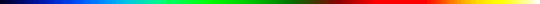

Selected Courses Taught at University of South Florida

- Summer 2002:
- Fall 2002:
- Spring 2003:
- Fall 2003:
- Spring 2004:
- Fall 2004:
- Spring 2005:
- Fall 2005:
- Spring 2006:
- Fall 2007:
- Spring 2008:
- Spring 2009:
- Fall 2009:
- Spring 2010:
- Fall 2010:
- Spring 2011:
- Fall 2011:
- Spring 2012:
- Fall 2012:
- Spring 2013:
- Fall 2013:
- Spring 2014:
- MAT5932-005 Lie Groups and Differential Equations
- Fall 2014:
- Spring 2015:
- MAT4930-003 Special Topics in Partial Differential Equations
- COP4313-001 Symbolic Computations in Mathematics
- Fall 2015:
- MAP4341-001 Introduction to Partial Differential Equations
- MAP5316-001 Ordinary Differential Equations
 Back to Ma's Home Page
Back to Ma's Home Page